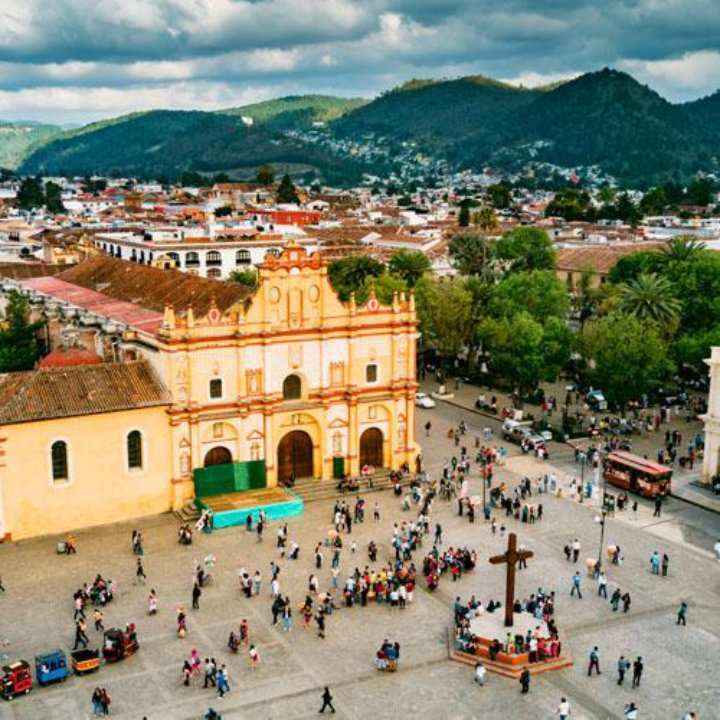

Lugares representativos
- Parroquia de San Francisco de Asís
- Plaza principal de Xonacatlán
- Iglesia histórica de Santa María Zolotepec
Dependencias y servicios
Consulta qué hace cada área del municipio y cómo contactarla.
Municipio del Estado de México, al norte del Valle de Toluca. Es conocido por sus tradiciones, su historia y la elaboración de peluches.

Consulta qué hace cada área del municipio y cómo contactarla.